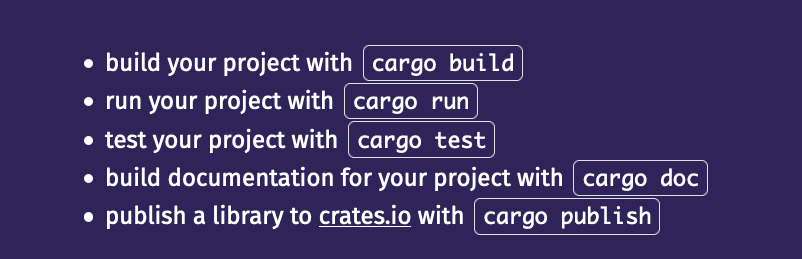
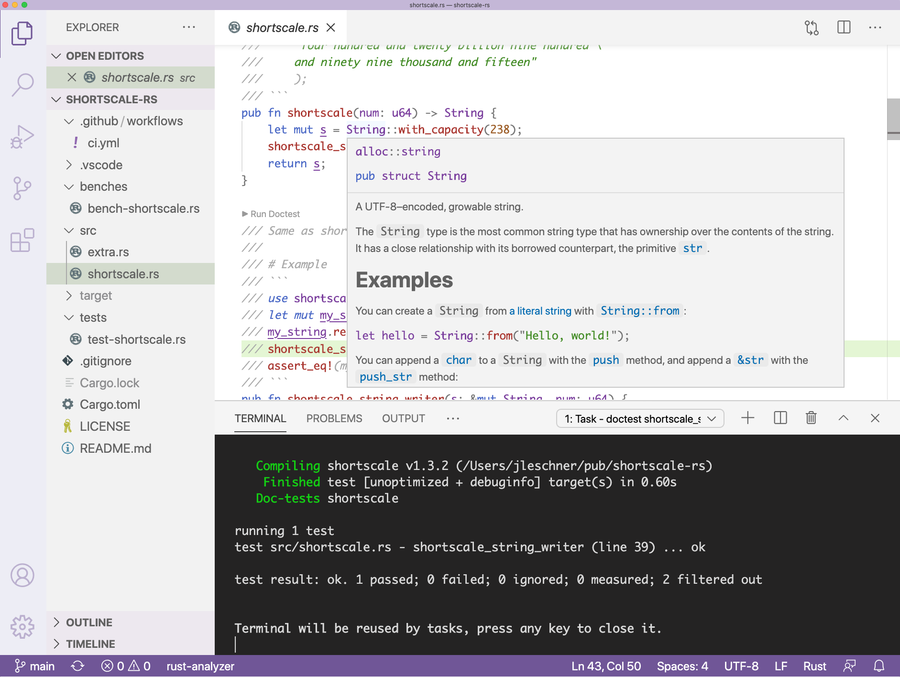

Why Rust?
A couple of years ago I picked up the excellent Programming Rust book.
Reading how the Rust compiler enforces memory safety and avoids data-races reminded me of the AHA! moment, when I learned how Node.js makes concurrency accessible to JavaScript developers, without the synchronization headaches of multi-threaded servers.
But there's more. Rust programs have a very minimal runtime - no garbage collector or class loader. This makes Rust ideal for constrained environments like embedded systems or edge compute platforms - so watch this space.
First impressions
This article covers the experience of buiding my first Rust crate.
The shortscale-rs library tries to replicate shortscale, a small JavaScript module with just one function which converts numbers to English words.
The Rust ecosystem has produced an absolutely awesome array of tools and documentation.
To get started:
- Install Rust using rustup.
- Run 'rustup update' whenever there is a new Rust release.
Those steps also take care of 'cargo', the Rust build tool.

https://www.rust-lang.org/learn/get-started
VS Code
I followed the recommendations of Jason Williams to install Rust Analyzer for VS Code instead of the default Rust extension. You'll also need CodeLLDB for debugging.

I particularly like the ability to run doctests directly in the VS Code terminal.
Rust String and str
In JavaScript building strings is straightforward. Simply use + to concatenate any string to any other string. Empty strings being falsy helps to write very compact logic.
The example below from shortscale.js behaves like the built-in Array.join, except that it avoids repeating separators by ignoring empty strings.
// concatenate array of strings, separated by sep, ignoring '' values
function concat(strings, sep) {
return strings.reduce((s1, s2) => s1 + (s1 && s2 ? sep : '') + s2, '')
}
Here's my first attempt to do something similar in Rust.
type Strvec = Vec<&'static str>;
// concatenate 2 Strvec's, separated with "and" if both have length
fn concat_and(v1: Strvec, v2: Strvec) -> Strvec {
match (v1.len(), v2.len()) {
(_, 0) => v1,
(0, _) => v2,
(_, _) => [v1, vec!["and"], v2].concat(),
}
}
'Why Strvec?', you might ask. In Rust, the primitive string type, used for string literals, is a str. My first thought was that shortscale-rs should manipulate collections of str's. So, instead of using String concatenation, I put str's into Vec's.
Notice the elegant match syntax - one of my favorite Rust language features. The compiler ensures that the 'arms' of the match cover all possible inputs. The result is both readable and concise. The '_' is shorthand for any value.
Performance does not matter,
until it absolutely does.
@matteocollina
Benchmarks
The measured performance was, well, an eye-opener! ~4459ns per shortscale_vec_concat call in Rust, compared to ~1342ns for the equivalent in Node.js.
shortscale 251 ns/iter (+/- 18)
shortscale_string_writer_no_alloc 191 ns/iter (+/- 11)
shortscale_str_push 247 ns/iter (+/- 22)
shortscale_vec_push 363 ns/iter (+/- 26)
shortscale_display_no_alloc 498 ns/iter (+/- 21)
shortscale_vec_concat 4459 ns/iter (+/- 344)
shortscale_string_join 5549 ns/iter (+/- 378)
shortscale 1342 ns/iter
Clearly the v8 JavaScript engine in Node.js is working very hard to make string manipulation efficient.
Learn & Iterate
The next thing I tried was to replace the Vec collections with simple Strings, creating and returning those from each function in the Rust program. This is shortscale_string_join. You should see from the benchmark, that its performance was even worse. Clearly I was doing something wrong.
Fast forward to the current implementation, which mutates a pre-allocated String rather than calling functions which create and return new Strings.
The result is significantly faster than JavaScript.
I still have a lot to learn, but this exercise was a great way to start building an intuition for Rust development and the performance of Rust primitives.
To leave a comment
please visit dev.to/jldec
powered by pub-server and pub-theme-pubblog